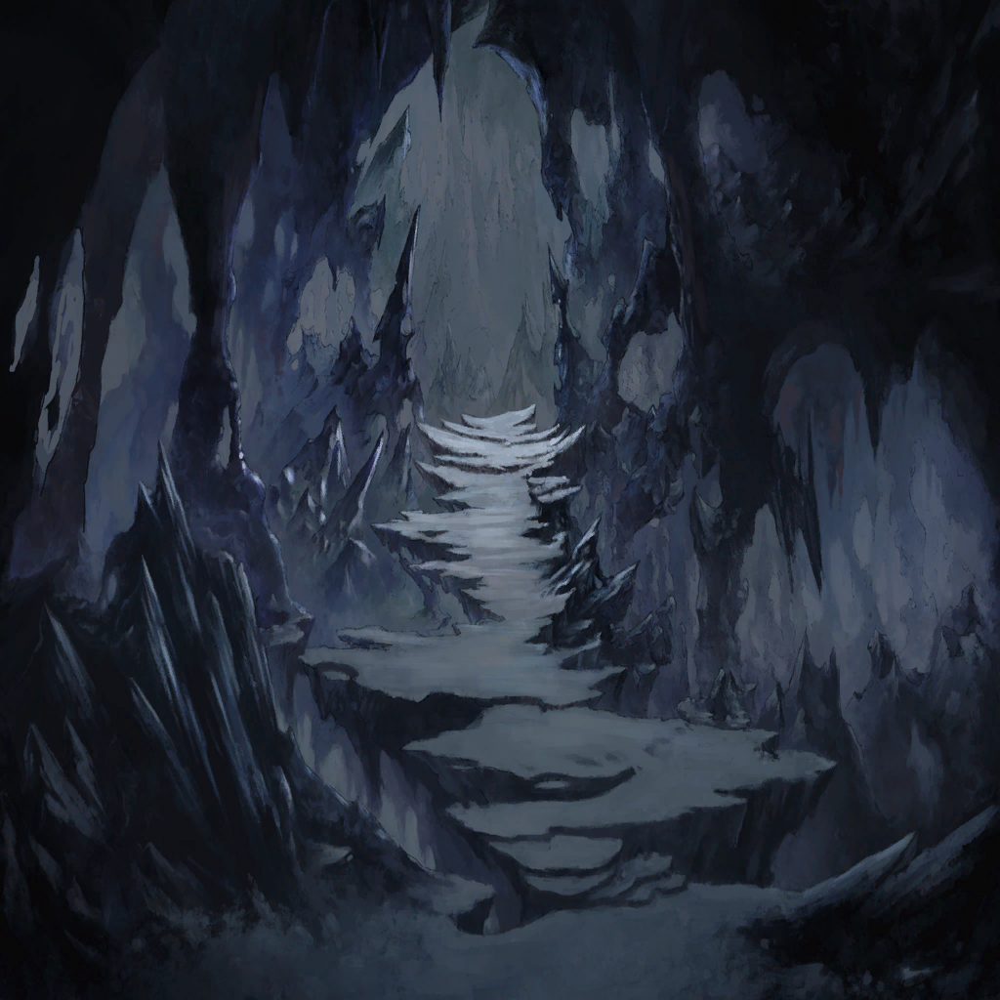

|
|  |
| 親とはぐれた子供 |
おとーさん、おかーさんはどこ？
ここに来る途中は一緒だったの！
ほんとうに一緒だったの！ |
| 憤怒の民 |
ああ、あぁ…きっと大丈夫さ
この層はリンドレイク様のお膝元だ
きっとあのお方が何とかしてくれる |
| 憤怒の民 |
だから今は、飯を食ってゆっくりお休み
後から来るお父さんとお母さんに
元気な顔を見せてやらにゃ |
| 親とはぐれた子供 |
…うん |
| クェンス |
…やりきれねえな |
| クェンス |
ガキも大人も、どっちも理解してやがる
そんな夢みたいな未来はないって |
| ローレアム |
…けど、時には嘘が
希望を繋ぐ最後の砦になることもある |
| クェンス |
嘘も方便ってか？
俺はごめんだねぇ |
| クェンス |
で、外の様子は？ |
| ローレアム |
かなりマズいね。囲まれてる |
| クェンス |
穢れに染まった連中…
そういや、
ワギナオは堕罪者とか呼んでたっけか |
| クェンス |
その堕罪者どもだが
正直、あまり知性があるようには見えねえ
本能のままに襲ってくる感じだよな |
| ローレアム |
そうだね。彼らに自我はない
あってもかなり希薄だろう |
| ローレアム |
今の彼らを支配しているのは、怒り…
善心も倫理も思い出も、
すべて塗り潰してくすぶる怒りだけだ |
| クェンス |
その割には、追いつめ方が周到すぎる
この洞窟だって、
リンドレイクの結界の中だろ？ |
| クェンス |
こんな短時間で囲まれるなんて
明らかにおかしいだろ |
| ローレアム |
…堕罪者を、誘導している奴がいる？ |
| クェンス |
俺はそう見るね
で、だとすれば…
ここに引きこもっていたらじり貧だ |
| クェンス |
ここはあくまで一時の避難先だ
水も食料も、
もってせいぜいあと三日ってところだろ |
| クェンス |
この避難所は、
籠城を選んだ時点で瓦解する
そっちも、同じ見解だろ？ |
| ローレアム |
打って出るしかない、か |
| クェンス |
しかも俺たち、ふたりでだ
この層の連中は戦闘の経験がない
連れて行けば無駄な犠牲が増える |
| ローレアム |
…せめて、闇には紛れたいね |
| クェンス |
同感だ
夜になれば、
マギルを感知できる俺の独壇場―― |
| 憤怒の民 |
た、大変だ！ |
| ローレアム |
何事だい？ |
| 憤怒の民 |
そ、外にまだ逃げ遅れた人たちが！
でもあの黒い連中に囲まれて…！ |
| クェンス |
…なんだと？ |
| ローレアム |
…すぐに行こう |
| クェンス |
確実に罠だぞ
俺たちを誘き出す為に、
わざと襲わずに追い込んだんだ |
| ローレアム |
…それでも、
助けに行かない理由はないよ |
| クェンス |
…だよなぁ |
| クェンス |
よし、まずは俺が魔法で撹乱する
アンタはその隙に包囲を破れ |
| ローレアム |
ありがとう
結構お人好しだね、君 |
| クェンス |
つい最近まで
善意の塊みたいなのと一緒にいてね
移ったのかもしれん |
| ローレアム |
じゃあ、その友人に感謝しなくちゃ |
| クェンス |
ああ、きっと喜ぶだろうぜ
“あのクェンスが、自分から人助けを…？”
ってな |
| ローレアム |
…それ、本当に喜んでる？ |
| クェンス |
さあな
…しくじるなよ？ |